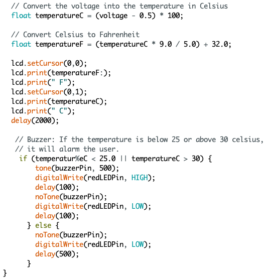
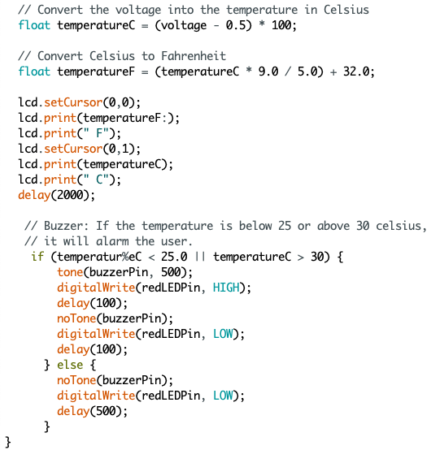

Lee
Jungjae Lee
Professor A’Amar
ENG EK 131 A1
May 4, 2022
Room Temperature Monitor Design Report
The report highlights the design and construction process of a Room Temperature Monitor prototype. It covers sketching and dimensional analysis of the structure and the assembly process. This report is significant as it demonstrates what we gained from the course and allows us to apply our knowledge to real-life situations.
The Room Temperature Monitor is a device that records the temperature and alerts users when the temperature goes out of range. This monitor can be used effectively in hospitals, schools, or indoors to help users check the temperature. We could also program it to automatically adjust the temperature to the appropriate room temperature using extra tools if needed. The project’s motivation is to use the various skills learned throughout the semester, such as wiring, coding the Arduino board, and calculating and choosing the right wiring following Ohms and Kirchhoff’s Law, for real-life application. When developing the Room Temperature Monitor, we considered the climate in which this device would be placed by changing the temperature range using the Arduino code. The report aims to show the Room Temperature Monitor’s development, what motivated the design, and evaluate the final design results to develop a better model in the future as there is always room for improvement. This project began in January, and we have learned mechanical and electrical skills, such as drawing, machining, 3D printing, circuit wiring, Ohm’s and Kirchhoff’s Law, microcontroller, and troubleshooting strategies to develop the best prototype possible. This project prepared us to develop a functional, safe, and well-engineered prototype and gave us a fun engineering experience in real-life situations.
I took into account all of the resources given by instructors and the knowledge I learned throughout the semester. Figure 1 below shows the list of the components used to create the Room Temperature Monitor prototype.
1. Enclosure | 2. Arduino Uno Board | 3. 9V Battery |
4. 9V Battery Snap | 5. USB Cable | 6. Breadboard 400 points |
7. Solid Core Jumper Wires | 8. Stranded Jumper Wire | 9. Temperature Sensor [TMP36] |
10. Alphanumeric 12C LCD | 11. LEDs | 12. Piezo Capsule (Buzzer) |
13. Resistors | 14. Two-way Switch |
Figure 1: List of Components used to create the Room Temperature Monitor
One of the most critical steps to making an accurate prototype is to find the dimensions of the components so we can consider them when creating the layout of the Enclosure and Battery box. Table 1 below shows the list of each component with its dimensions and identifications.
Table 1: Dimensions for relevant Components
Item | Identification | Width | Length | Height | Diameter |
ABS enclosure | Top, Side, Front | 117.5 mm | 117.3 mm | 57.7 mm | N/A |
Arduino Board | Top | 68.5 mm | 53.7 mm | 15.2 mm | N/A |
Switch | Top | 20.6 mm | 14.7 mm | 19.0 mm | N/A |
LCD 2X16 | Top | 80.2 mm | 35.9 mm | 20.0 mm | N/A |
Buzzer | Top | N/A | N/A | 18.0 mm | 20.0 mm |
Temperature Sensor | Top | N/A | N/A | 15.0 mm | 5.00 mm |
LED | Top | N/A | N/A | 34.0 mm | 5.00 mm |
We created freehand sketches of layouts of the components with the dimensions measured in Table 1 above so we could easily draw in CAD without needing to measure the components more than once. Figure 2 on the next page shows the Freehand sketch of the main components we used to make a prototype.
Figure 2: Freehand Sketch of Components
We drew the enclosure in CAD to visualize the drilling and battery placement. Figure 3 below shows the CAD drawing of the enclosure following the size of the components hole size that was measured in Table 1.
Figure 3: CAD Drawing of the Enclosure
The green LED is placed next to the two-way switch so the user can know instantaneously when the device is on or off, while the red LED and buzzer are placed on the side so when the device is mounted on the wall, the user can see the alarm easily. LCD is placed on the device lid so it is easily visible to users, and the Arduino board is placed on the acrylic plate inside the box so it is secured. It is so it does not get damaged when there is any impact on the device, as it is the most sensitive component. The decision to use this setup was so all parts were easily visible to the user and the wiring could be well organized. Furthermore, the battery holder is glued to the wall inside the box where there is not much wiring, so the user can put in and take out the battery without any interference.
The Arduino board’s primary purpose is to convert a digital input and output to an analog. Also, it is relatively low cost and suitable for prototypes such as this project. Arduino board is also easy to use, and most people can code even without prior code knowledge.
Figure 4 below shows the wiring diagram of the box we used to prototype the Room Temperature Monitor. The wiring connected to the switch uses crimp ends, and any wiring connected to the Arduino board directly is connected with jumper wires, which gives a more secure connection to the board. All other wiring is connected with soldering and covered neatly using heat shrinks of approximate size. Heat shrinks are used to defend against the water or any dust that might interface or contaminate the wire. It also helps organize the wires into easy-to-handle bundles. In addition, the wiring is color-coded mainly with the black and red wire to avoid any confusion during the building process, so the user can easily access when the component has to be replaced in the future.
Figure 4: The wiring diagram of the Temperature Monitor
AWG, also known as American Wire Gauge, is the prominent wiring people use in North America. The temperature sensor, voltage drop across the conductor, insulation on the wire, number of conductors inside the cable, and type of load, such as resistive, inductive, or capacitive, was taken into account when we chose the diameter of the conductor using Ohm’s Law. The wire has to handle at least 125% of the expected current for the resistive load and up to 175% of inductive loads, so we have decided to use 26 AWG wire.
We used a nine-voltage battery to power the Arduino Board because the recommended voltage range is 7 to 12 and provides enough voltage to power the components. The Arduino’s maximum output is 5V in the system. The maximum current draw of the Arduino board is roughly 220 mA, and the current draw of the other components is negligible. We used the if-else statement in our Arduino code to notify the user when the temperature goes out of range. We set up the temperature range of the Room Temperature Monitor as between 75 Fahrenheit and 85 Fahrenheit. If the temperature goes out of range, the Arduino will send the fibration to the buzzer and make a loud warning sound, and Red LED will blink. The code used to accomplish this can be found in Figure 5 below.
Figure 5: Arduino Code
The buzzer and Red LED went off correctly during the demonstration when testing the Room Temperature Monitor with both warm and cold temperatures. The buzzer successfully rose in volume, the red LED began to blink with the buzzer, and the temperature was displayed on the LCD without any issue. Also, there is no issue with turning on the Room Temperature Monitor with the switch with a green LED lighting up when the system is on. Even though it was challenging, I am happy with my wiring as my wire is clean and following the safety rules. I focused on the wiring alot as I believe clean wiring allows us to fix when some unexpected issue shows up without needing to track all of the wire. In the future, I wish to try to make a smaller Temperature Monitor so users can carry it around and check the temperature. The final photos of the wiring and Room Temperature Monitor prototypes can be found below in Figure 6.
Figure 6: Final Product